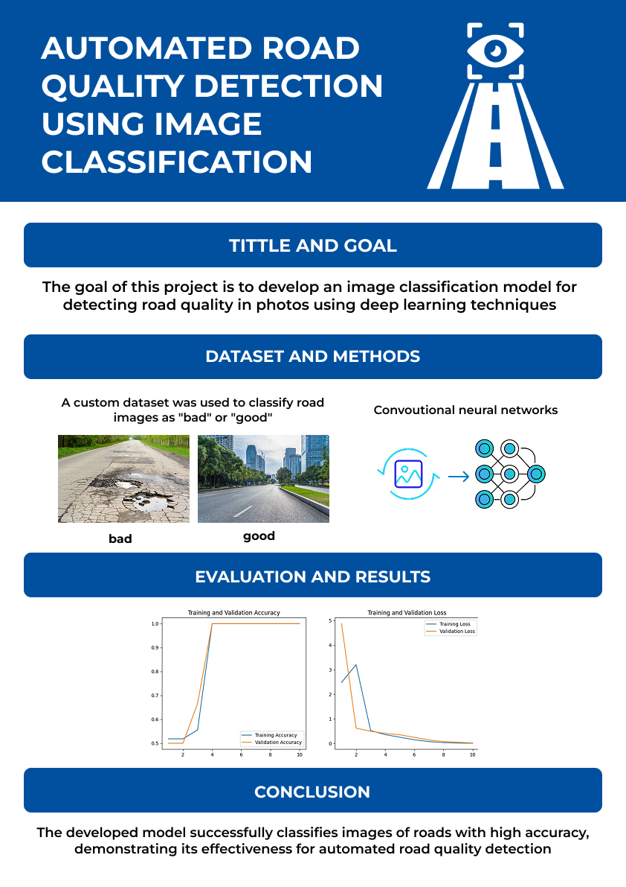

Датасет
Мы использовали смесь собственных изображений и открытых источников, вручную разметили изображения на две категории: хорошая дорога и поврежденная дорога. После этого обучили сверточную нейросеть (CNN). Ниже — пример входных изображений:

Финальный проект по курсу Искусственный Интеллект
Мы разработали систему компьютерного зрения, которая автоматически определяет, находится ли дорога в хорошем состоянии или нуждается в ремонте. Это решение может быть интегрировано в камеры умного города для быстрого обнаружения повреждений и оперативного реагирования.
Мы использовали смесь собственных изображений и открытых источников, вручную разметили изображения на две категории: хорошая дорога и поврежденная дорога. После этого обучили сверточную нейросеть (CNN). Ниже — пример входных изображений:
Модель была обучена в течение 10 эпох. Финальные метрики:
Ниже — график точности по эпохам:

Скачать/посмотреть постер можно ниже:
